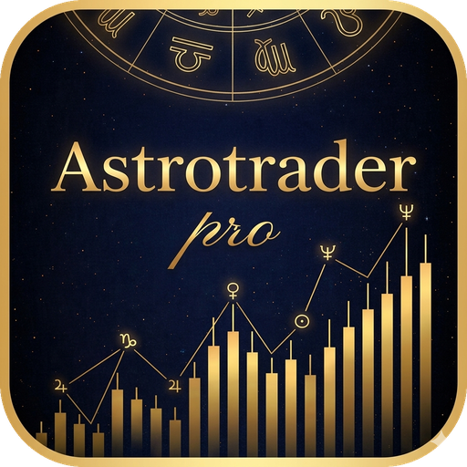
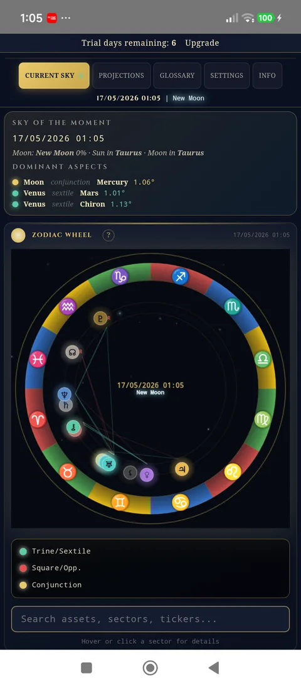
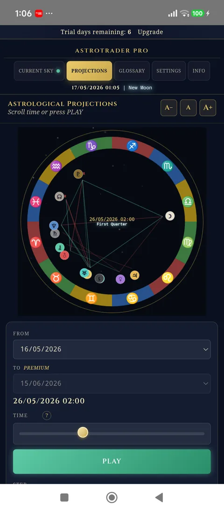
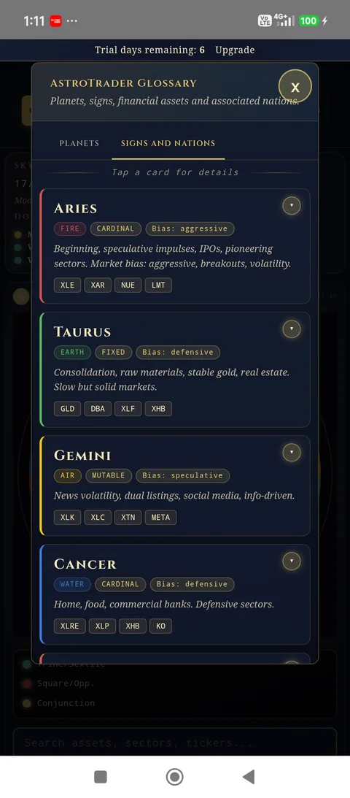
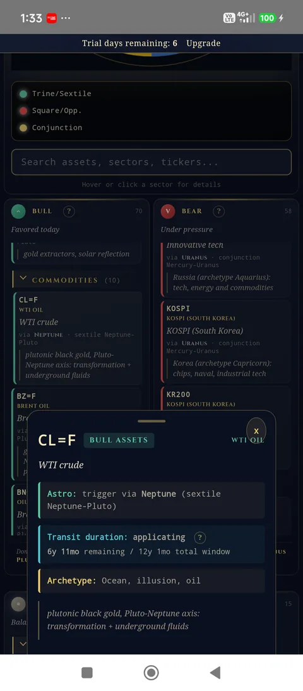
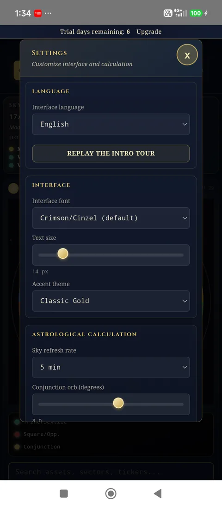

AstroTrader Pro™
The educational tool that applies classical astrological tradition to financial markets. Live planetary wheel, transits, Bull / Neutral / Bear assets — in one elegant, offline-capable, privacy-first app.
Webapp: 3 plans (Monthly · Annual · Lifetime) — App (Google Play): Monthly €9.99 · 7-day free trial
Three traditions, one reading
Precise astronomy, classical symbolism, market mapping. All transparent, all built on public sources.
Accurate sky
12 signs × 13 planets. Planetary positions accurate to the arcsecond, computed via open-source public-domain algorithms (VSOP87, IAU).
200+ mapped assets
Indices, stocks, commodities, forex, crypto, ETF — each linked to its ruling planet according to classical and financial tradition.
Time projections
Move the date forward or hit PLAY: watch the wheel evolve and see which assets will be favored, neutral, or under pressure.
Three simple principles
No need to be expert in astrology or trading. The logic is clear from the start.
The sky moves
Each day the planetary configuration is unique. AstroTrader Pro computes it in real time, wherever you are in the world.
Each planet rules
Jupiter rules banking and finance, Mars energy and defense, Venus luxury and currencies, Mercury tech and communication. Classical tradition maps planets to sectors.
The app translates — and explains
Three live lists (Bull, Neutral, Bear) with 200+ assets, each linked to its ruling planet. Tap any asset to see the exact transit (e.g. Jupiter trine Sun), the ruled sectors and the activation window. No black box — every signal is explained.
A look inside the app
Real screens from the build currently in final approval — five core views of AstroTrader Pro.





For those who want a different perspective
What you get
Simple, transparent
All plans include the same Premium features. Choose the cadence that fits you. 7-day free trial on all subscriptions.
Flexible. Cancel anytime.
7-day free trialSave 42% — equivalent to €5.83/month
For long-term explorers.
7-day free trialAll future updates included. Support indie development.
Pay once. Use forever.Monthly €9.99/month is available both in the Android app and on the web. The Annual and Lifetime plans are available only on the web app.
All plans include:
- Full wheel with all 13 planets
- Projections up to 5 years ahead
- Unlimited cached dates
- Customizable transit notifications
- Complete glossary in 13 languages
Cancel anytime from Google Play settings. No auto-renewal during trial.
What AstroTrader Pro is — and is not
Total honesty before you install. We tell you exactly what to expect, and what not to.
It is NOT
- Financial advice or investment recommendation
- A market prediction tool or signal generator
- An automated trading or copy-trading system
- A broker or trading platform
- A guarantee of returns or magical forecast
It IS
- An educational tool based on classical tradition
- A symbolic mapping of planets to economic sectors
- A study lens — a complement to your own research
- An offline-first, privacy-first mobile app
- A cultural reference for mundane astrology students
AstroTrader Pro is an educational and symbolic-analysis tool. Astrological projections do NOT constitute financial advice, investment recommendation, or trading signal. The predictive efficacy of astrology is not scientifically proven. Trading involves risk of total capital loss. Every financial decision is your sole responsibility. Always consult a qualified financial advisor before making investment decisions.
A lineage spanning two millennia
Built on the classical Western tradition (Ptolemy, Tetrabiblos) and on early 20th-century financial astrology — including the work of W.D. Gann (Tunnel Thru the Air, 1927) and Louise McWhirter — plus the archeosophical and esoteric references of Tommaso Palamidessi and Alice Bailey (Esoteric Astrology). Astronomical calculations are based on open-source, public-domain algorithms: VSOP87 (Bureau des Longitudes, Paris, 1987) and IAU 2006 (International Astronomical Union).
Quick answers
Does the app predict markets?
No. AstroTrader Pro is a symbolic and educational tool. It shows correlations from classical astrological tradition with financial sectors, but does not offer operational forecasts or any guarantees. The predictive efficacy of astrology is not scientifically proven.
Does it work offline?
Yes. All astronomical calculations and data are bundled with the app. The only required connection is for managing the Premium subscription (Google Play). The wheel, projections, and glossary work fully offline.
How many languages are available?
13: Italian, English, Spanish, French, German, Portuguese, Dutch, Russian, Chinese, Japanese, Korean, Arabic (with full RTL support), Hindi.
Does the subscription auto-renew?
Yes, but you can cancel anytime from Google Play settings. If you cancel during the 7-day trial, you are not charged. After the trial, billing is €9.99 per month.
What data does the app collect?
No tracking, no analytics, no advertising. The only data processed is what is strictly necessary for subscription management (pseudonymous identifier handled by RevenueCat, transaction metadata handled by Google Play). Full details in the privacy policy.
Who is the app for?
For anyone interested in exploring the symbolic relationship between planetary cycles and markets: traders curious about classical cycle theory, financially-minded astrologers, students of mundane and esoteric astrology. Recommended age: 18+.
When will it be available on Google Play?
The app is complete and in final approval phase at Google Play. The actual release date depends on Google's verification timelines and the mandatory closed testing phase for new developers (minimum 14 days).